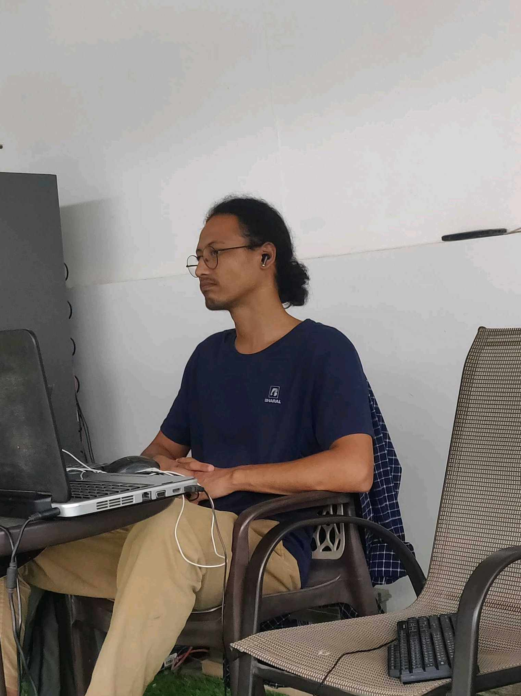

I have been solving all the project ideas on roadmap.sh and I am surprised how far I have come from where I started.
Highly recommended!
Artem Jones
Junior Frontend Developer
Since starting my career in 2021, I have only followed one resource, roadmap.sh, it truly helped me go from 0 to having a job and changing the financial trajectory of my family

Artem Jones
Junior Frontend Developer
Jackie Mackle
Engineering Manager
I find myself recommending roadmap.sh to all the internees or junior developers. It's a great way to skill up and grow in your career.
roadmap.sh is an incredible resource. I was fortunate to discover it during my university days in 2018. Back then, it was just a single repository with three images. It's amazing to see how much impact it has had on millions of lives since then.